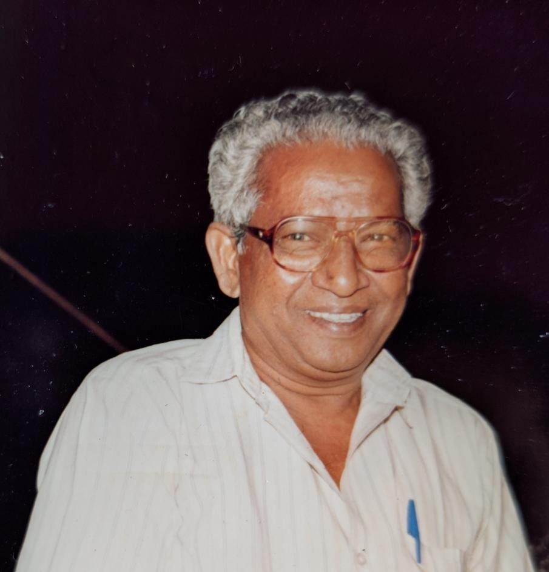

In Loving Memory
A celebration of lives well lived

Vudimudi Augusteen Rao
August 14, 1936 – December 28, 2013
"A life that touches others goes on forever."
Vudimudi Deena Suseela Rani
June 7, 1947 – December 18, 2024
"To live in hearts we leave behind is not to die."
Their Story
Loading life events...
Photo Memories
Loading cherished memories...
Special Places
Family Home
Where countless memories were made and family bonds grew stronger.
Place of Worship
A sacred space that brought peace and spiritual connection.
Favorite Garden
Where they found joy in nature's beauty and tranquility.